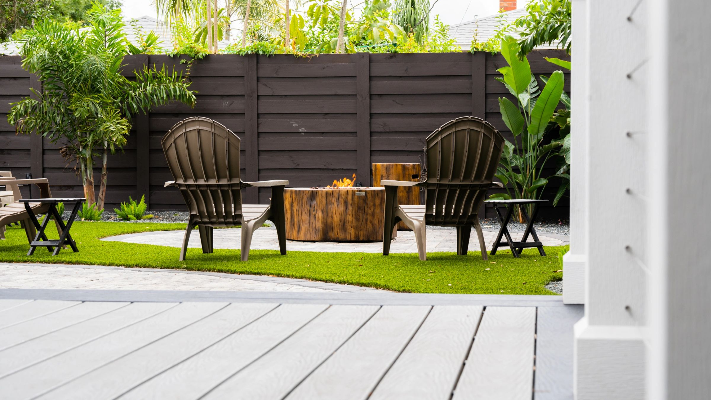

← All projects
Outdoor Living
Winter Garden Summer Kitchen
A cedar pergola over a brick paver patio, with a built-in outdoor kitchen, bar seating and a fireplace. The bare backyard became an outdoor room.
From start to finish
Follow the work in the order it happened, from the first day on site to the finished space.
October 2021Where it started
November 20214 photos
December 202113 photos
January 20229 photos
February 2022Finished
